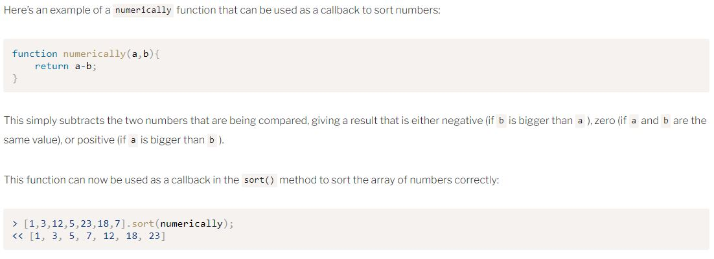

Week02
Notes/Exercises
Programming Basics
- There’s no need to actually use a semicolon to terminate a statement because JavaScript interpreters use a process called Automatic Semicolon Insertion (ASI). However, it can be error-prone and cause a number of automated services such as code minifiers and validators to not work properly. It is best practice to add a semi-colon at the end of each line.
- The following words are reserved for use by the JavaScript language and cannot be used to name
variables, function parameters or object properties:
abstract, await, boolean, break, byte, case, catch, char, class, const, continue, debugger, default, delete, do, double, else, enum, export, extends, false, final, finally, float, for, function, goto, if, implements, import, in instanceof, int, interface, let, long, native, new, null, package, private, protected, public, return, short, static, super, switch, synchronized, this, throw, throws, transient, true, try, typeof, var, volatile, void, while, with, yield - Use of the variable keyword var was replaced by let with JavaScript ES6. You should still be aware of it because it will be seen frequently in older code.
- Global and Local Scopes example:

Arrays, Logic, and Loops
- You can sort an array with the sort() method and will do so alphabetically by default for string objects. Numbers also get sorted alphabetically by their first digit rather than numerically.
- If you want to know if an item is in an array, you can use the indexOf() method. The result will give you the first occurance of that item, but if it is not in an array it will return -1.
- Switch Statements example:
Functions
- To sort an array numerically you will use a callback:

Questions:
- -